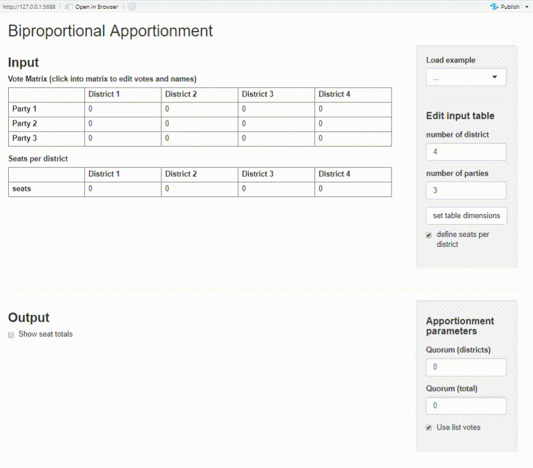

Calculate seat apportionments for legislative bodies with various methods. Methods inlcude divisor methods (e.g. D’Hondt, Webster or Adams), quota methods (e.g. largest remainder method) and biproportional apportionment.
Mit diesem R-Package können mittels verschiedener Sitzzuteilungsverfahren Wählerstimmen in Abgeordnetensitze umgerechnet werden. Das Package beinhaltet Quoten-, Divisor- und biproportionale Verfahren (“Doppelter Pukelsheim”).
- Install
- Apportionment methods overview
- Divisor and quota method examples
- Biproportional apportionment examples
- Shiny app
- See also
Install
Install the package from Github:
# install.packages("devtools")
devtools::install_github("polettif/proporz")Apportionment methods overview
Divisor methods
| divisor method | known as… | function |
|---|---|---|
| Floor | D’Hondt, Jefferson, Hagenbach-Bischoff | divisor_floor(votes, n_seats, quorum = 0) |
| Round | Sainte-Laguë, Webster | divisor_round(votes, n_seats, quorum = 0) |
| Ceiling | Adams | divisor_ceiling(votes, n_seats, quorum = 0 |
| Harmonic rounding | Dean | divisor_harmonic(votes, n_seats, quorum = 0) |
| Geometric rounding | Huntington-Hill | divisor_geometric(votes, n_seats, quorum = 0) |
Quota methods
| quota method | known as… | function |
|---|---|---|
| Largest remainder | Hamilton, Hare-Niemeyer, Vinton | quota_largest_remainder(votes, n_seats, quorum = 0) |
Biproportional methods
| biproportional method | known as… | function |
|---|---|---|
| Generic Biproportional apportionment | - | biproportional(…) |
| Doppeltproportionales Zuteilungsverfahren | Doppeltproportionale Divisormethode mit Standardrundung, Doppelproporz, “Doppelter Pukelsheim” | pukelsheim(…) |
Divisor and Quota examples
votes = c("Party A" = 690, "Party B" = 400, "Party C" = 250, "Party D" = 120)
divisor_round(votes, 10)
#> Party A Party B Party C Party D
#> 4 3 2 1
divisor_floor(votes, 10)
#> Party A Party B Party C Party D
#> 5 3 2 0
quota_largest_remainder(votes, 10)
#> Party A Party B Party C Party D
#> 5 3 1 1All methods are also accessible by their names with proporz():
votes = c("Party A" = 651, "Party B" = 349, "Party C" = 50)
proporz(votes, 10, "sainte-lague")
#> Party A Party B Party C
#> 7 3 0
proporz(votes, 10, "hill-huntington")
#> Party A Party B Party C
#> 6 3 1
proporz(votes, 10, "hill-huntington", quorum = 0.05)
#> Party A Party B Party C
#> 6 4 0Biproportional apportionment examples
finland-comparison.md contains a simple analysis on how different election methods impact seat distributions for the 2019 Finnish parliamentary election.
The package provides the zug2018 data set with election data for the canton of Zug (source). We can use it to illustrate biproportional methods, first with pukelsheim():
votes_df = unique(zug2018[c("list_id", "entity_id", "list_votes")])
district_seats_df = unique(zug2018[c("entity_id", "election_mandates")])
seats_df = pukelsheim(votes_df,
district_seats_df,
quorum_any(any_district = 0.05, total = 0.03))
head(seats_df)
#> list_id entity_id list_votes seats
#> 1 2 1701 8108 2
#> 2 1 1701 2993 0
#> 3 3 1701 19389 3
#> 4 4 1701 14814 2
#> 5 5 1701 4486 1
#> 6 6 1701 15695 3
divisors(seats_df)
#> $districts
#> 1701 1702 1703 1704 1705 1706 1707 1708
#> 5745.5376 3586.0000 2607.0000 1435.0000 743.0312 1709.0000 1816.8750 2561.0000
#> 1709 1710 1711
#> 2342.0000 725.5000 7275.1719
#>
#> $parties
#> 1 2 3 4 5 6 7
#> 1.0000000 0.8828125 1.0000000 1.0316329 0.8750000 1.0000000 1.0537109pukelsheim handles data.frames and is a wrapper for biproportional which uses a vote matrix and district seats (vector) as input and returns a seat matrix.
votes_df = unique(zug2018[c("list_id", "entity_id", "list_votes")])
votes_matrix = pivot_to_matrix(votes_df)
votes_matrix
#> entity_id
#> list_id 1701 1702 1703 1704 1705 1706 1707 1708 1709 1710 1711
#> 1 2993 0 0 0 0 0 0 0 0 0 0
#> 2 8108 4687 1584 531 279 477 2363 3860 1481 91 22023
#> 3 19389 9334 4807 1946 396 2844 3523 4702 3310 812 21343
#> 4 14814 6691 4005 826 379 1654 2842 2624 2713 461 33789
#> 5 4486 2270 621 198 0 361 728 465 925 0 10131
#> 6 15695 4705 1750 84 0 51 627 1106 1563 302 21794
#> 7 21298 8178 2875 1336 399 1450 3715 2610 4063 344 26798
distr_df = unique(zug2018[c("entity_id", "election_mandates")])
district_seats = setNames(distr_df$election_mandates, distr_df$entity_id)
district_seats
#> 1701 1702 1703 1704 1705 1706 1707 1708 1709 1710 1711
#> 15 10 6 3 2 4 7 6 6 2 19
seats_matrix = biproportional(votes_matrix, district_seats, quorum_any(0.05, 0.03))
seats_matrix
#> entity_id
#> list_id 1701 1702 1703 1704 1705 1706 1707 1708 1709 1710 1711
#> 1 0 0 0 0 0 0 0 0 0 0 0
#> 2 2 1 1 0 0 0 1 2 1 0 3
#> 3 3 3 2 1 1 2 2 2 1 1 3
#> 4 2 2 1 1 0 1 2 1 1 1 5
#> 5 1 1 0 0 0 0 0 0 0 0 2
#> 6 3 1 1 0 0 0 0 0 1 0 3
#> 7 4 2 1 1 1 1 2 1 2 0 3Shiny app
The package provides a basic Shiny app where you can calculate biproportional apportionment on an interactive dashboard. You need have the packages shiny and shinyMatrix installed.

See also
- RBazi: Package using rJava to access the functions of the BAZI.
- seatdist package for seat apportionment and disproportionality measurement.
- apportR: Package containing various apportionment methods, with particular relevance for the problem of apportioning seats in the House of Representatives.
- disprr Examine Disproportionality of Apportionment Methods.
Why another package?
Mainly because I wanted to implement biproportional apportionment in base R as an exercise. I’m aware that the other packages provide more methods or better analysis. However, biproportional apportionment is missing from the other pure R packages and RBazi needs rJava with an accompanying jar.